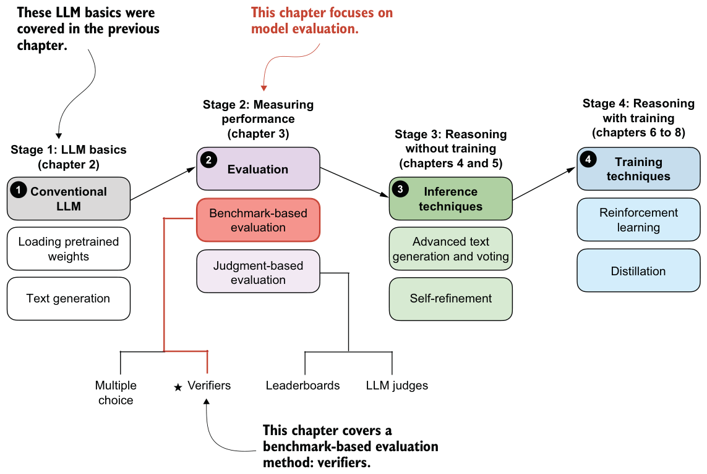

Exercise 2.2: Rerunning code on non-CPU devices
In case you are curious about how the different model configurations compare on an Apple Silicon GPU and a high-end NVIDIA GPU, see table 2.1.
| Mode | Hardware | Tokens/sec | GPU memory |
|---|---|---|---|
| Regular | Mac Mini M4 CPU | 5 | - |
| Regular compiled | Mac Mini M4 CPU | 6 | - |
| KV cache | Mac Mini M4 CPU | 28 | - |
| KV cache compiled | Mac Mini M4 CPU | 68 | - |
| Regular | Mac Mini M4 GPU | 27 | - |
| Regular compiled | Mac Mini M4 GPU | 43 | - |
| KV cache | Mac Mini M4 GPU | 41 | - |
| KV cache compiled | Mac Mini M4 GPU | 71 | - |
| Regular | NVIDIA H100 GPU | 51 | 1.55 GB |
| Regular compiled | NVIDIA H100 GPU | 164 | 1.81 GB |
| KV cache | NVIDIA H100 GPU | 48 | 1.52 GB |
| KV cache compiled | NVIDIA H100 GPU | 141 | 1.81 GB |
As shown in table 2.1, the NVIDIA GPU delivers the best performance, which is expected. The CPU still performs surprisingly well once a KV cache and a compiled model are enabled. However, there are a few important details that explain why the GPU gains are not larger for this particular setup.
First, the model in this chapter is not optimized for GPUs. The implementation aims for a good balance between memory usage and compute speed because memory is the main bottleneck for most readers. A GPU-optimized variant would preallocate the full K and V tensors up to the maximum context length (in this case, 40 thousand tokens). This preallocation avoids repeated concatenation via torch.cat, but it also increases memory consumption.
With a large context size, preallocating, for example, 40 thousand entries for both K and V adds a noticeable footprint. Another approach would be to let users specify a fixed context size at construction time, but that introduces extra configuration overhead. The KV cache here grows on demand via torch.cat, which is simpler and more memory friendly, although concatenating non-preallocated tensors is a bit slower on GPUs.
I included a GPU-optimized version in the bonus materials, where the KV cache variant is slightly faster than the regular version, but it uses more memory (see https://github.com/rasbt/reasoning-from-scratch/tree/main/ch02/03_optimized-LLM).
Second, the model used for benchmarking is small. Larger models benefit much more from KV caching and from GPU-optimized memory layouts. The same holds for batched inference, where GPUs can better saturate their compute units. With a larger model or a GPU-focused implementation, the performance gap in favor of the NVIDIA GPU would be more pronounced.
All examples were run using a single prompt (i.e., a batch size of 1). For readers interested in how performance scales with multiple inputs, batched inference is discussed in appendix E.
Summary
- Using LLMs to generate text involves multiple key steps:
- Setting up the coding environment to run LLM code and install necessary dependencies
- Loading a pretrained base LLM (such as Qwen3 0.6B), which will be extended with reasoning capabilities in later chapters
- Initializing and using a tokenizer, which converts text input into token IDs and decodes output back to human-readable form
- Text generation in LLMs follows a sequential (autoregressive) process, where the model generates one token at a time by predicting the next most likely token. The speed and efficiency of text generation can be improved through
- KV caching, which stores intermediate states to avoid recomputing previously encountered input tokens at each step
- Model compilation using
torch.compile, which optimizes runtime performance
- This chapter lays the technical foundation for reasoning capabilities in upcoming chapters by implementing a functional, efficient text generation pipeline using a pretrained base LLM.
Evaluating reasoning models
This chapter covers
- Extracting final answers reliably from an LLM response
- Verifying answer correctness by comparing an LLM’s output to the reference solution using a symbolic math solver
- Running a full evaluation pipeline that loads a pretrained model, generates outputs, and grades them against a dataset
Evaluation is what lets us distinguish between LLMs that merely sound convincing and those that can solve problems correctly. LLM evaluation techniques span a broad range of approaches, from measuring task accuracy to making sure that LLMs adhere to specific safety standards. In this chapter, “evaluate” means quantitatively testing a model on many examples and scoring its outputs against reference answers.
More specifically, we’ll focus on implementing a verification-based method that checks whether an LLM can solve math problems accurately by comparing its answers against reference solutions using a calculator-like implementation.
This verifier is particularly useful because it not only evaluates performance on math tasks but also introduces the principle of verifiable rewards, the foundation of the reinforcement learning approach to reasoning models that we’ll implement in chapter 6.
